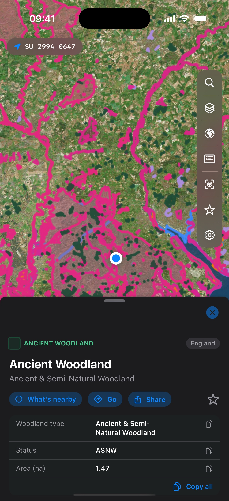

Statutory designations · nine countries
Every designation.
One map.
Merestone puts the statutory environmental and planning designations of the United Kingdom, Ireland, France, Spain, Portugal, the Netherlands, Belgium, Germany and Switzerland on one fast, native map, streamed live from the agencies that publish them. Built for ecologists, planners, land professionals and everyone who works outdoors.

What makes it different
The official data, without the fifteen browser tabs.
A designation check normally means a slow web GIS on a laptop, or squinting at a government portal in a field with one bar of signal. Merestone is the same authoritative data on a map that opens instantly, in nine countries and seven languages, and keeps working when the signal goes.
Nine countries, the publishers' own data
England, Scotland, Wales and Northern Ireland, Ireland, France, Spain, Portugal, the Netherlands, Belgium, Germany and Switzerland, with each layer drawn from the agency that publishes it, never a stale export. The Layers panel names the publisher behind every layer.
Tap anything for its record
Every shape opens its official record: designation details, condition, areas and links. Where features stack on top of each other, a what's-here list untangles them.
An instant desk study
Search around here lists everything within a radius of any point, with distances and bearings, and exports a dated report. Or search by site name, by place, or by grid reference in the system each country actually uses.
Works with no signal
Unlock a country and download any of its layers. Downloaded layers draw automatically the moment you lose signal, and the app says whether it used live data or your download.
Made for the field
One-handed controls by your thumb, one-tap grid-reference copy, saved layer presets, and favourites in folders with notes and CSV export, ready to paste into a report.
Seven languages
English, French, German, Italian, Spanish, Portuguese and Dutch, with the same map, searches and report throughout. Merestone is an independent app, not affiliated with any of the agencies whose data it shows.
In the field
Pocket-sized designations.
The full app on your iPhone: one-handed controls by your thumb, offline layers when the signal drops, and the grid reference always one tap from your clipboard.


Four devices
Plan on the iPad, check it on the Mac, carry it on the iPhone, glance at your wrist.
iPhone & iPad
The full app, arranged for one hand on iPhone, and desk-study scale on the iPad's big canvas. Downloaded layers work offline on both.
Mac
A real Mac app with a real menu bar: keyboard shortcuts for search, layers and zoom, floating panels you can move and resize, and a trackpad zoom mode. The desk-study machine.
Apple Watch
Open it on site and your wrist shows the designations around you, with distances and grid references. No phone out of the pocket.
The data
Each layer is published under its agency's open-data licence, with attribution shown in the app and on this site's support page. Contains public sector information licensed under the Open Government Licence v3.0. Base map © Apple. Requests go from your device to the publishers' services, never through a server of mine.
How it is sold
Free to start. Pay for the countries you use.
Every country's statutory core is free. Unlocking a country is a one-off purchase that covers iPhone, iPad, Mac and Apple Watch and adds that country's full set of layers, wider searches, the report and offline downloads. If you work across borders, the optional Merestone Worldwide subscription unlocks every country instead and renews until you cancel it in your Apple account.
An optional Merestone account links your purchases to merestonemaps.com, so the same purchases work in the app and on the website. You never need an account to use or buy Merestone. No analytics, no tracking; see the privacy policy.